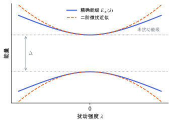

位置、路径与目录
微扰理论与线性响应
概念节点领域：量子力学v0.2 · 2026-11-10
草稿已有正文，但来源和推导还没有核查完，不能当作定论。
一阶、二阶微扰能量和波函数修正怎样来，怎样推广到 DFT 的线性响应（DFPT）和 Sternheimer 方程。
哈密顿量受到一个小扰动 \lambda V（电场、原子位移、应变），能级和波函数会怎样变？如果扰动小，就可以按 \lambda 的幂次展开，逐阶求解。
几个关键结论：
- 一阶能量是扰动在原态上的期望值，这其实就是 Hellmann–Feynman 定理：力与应力。
- 二阶能量来自扰动把原态和其他态混合起来，分母是能级差。能级差越小，混合越强，响应越大。
- 响应量（极化率、介电常数、力常数、压电系数）都是能量对扰动的二阶导数，所以都需要一阶波函数。
固体中对所有空态求和太贵。Sternheimer 方程把“对空态求和”换成解一个线性方程，这是密度泛函微扰理论 (DFPT) 的核心 [Baroni 2001]。

两能级体系（Δ=1，耦合强度 V=0.9 的示意参数）：实线是精确能级，虚线是二阶微扰近似。λ 小时两者重合，λ 大时偏离；扰动把两个能级推开。
| 符号 | 是什么 | 图里对应 |
|---|
| \lambda | 扰动强度 | 横轴 |
| \Delta | 未扰动的能级差 | 左侧双向箭头 |
| V | 两态之间的耦合矩阵元 | 决定曲线弯曲程度的参数 |
| E_\pm | 精确本征值 | 实线 |
| 二阶近似 | \pm\bigl(\Delta/2 + (V\lambda)^{2}/\Delta\bigr) | 虚线 |
对基态，所有 E_n - E_m < 0，所以二阶能量总是负的：扰动总能降低基态能量。
2n+1 定理
知道 n 阶波函数，就能算到 2n+1 阶能量。特别地，一阶波函数足以给出二阶和三阶能量。这一结论在 DFT 中同样成立，因为 DFT 能量也是变分的 [Gonze & Lee 1997]。
在 DFPT 中，\Delta V 本身依赖一阶密度变化（Hartree 和交换关联势随密度变化），所以 Sternheimer 方程也要自洽求解，类似 自洽场循环与密度混合。
| 扰动 | 二阶导数 | 对应的量 |
|---|
| 电场 × 电场 | \partial^{2}E/\partial\mathcal{E}^{2} | 电子介电张量 \varepsilon^{\infty} |
| 原子位移 × 电场 | \partial^{2}E/\partial u\,\partial\mathcal{E} | Born 有效电荷 Z^{*} |
| 原子位移 × 原子位移 | \partial^{2}E/\partial u^{2} | 力常数、声子 |
| 应变 × 电场 | \partial^{2}E/\partial\eta\,\partial\mathcal{E} | 钳位离子压电张量 |
- VASP
LEPSILON = .TRUE.：用 DFPT 算 \varepsilon^{\infty}、Z^{*} 和钳位离子压电张量（见 介电张量与玻恩有效电荷 与 压电张量）。 - 离子弛豫部分：压电张量的离子贡献需要力常数和内应变，通常用
IBRION = 7/8（DFPT）或 IBRION = 5/6（有限差分）（见 有限差分与微扰方法）。 - 能隙与响应：二阶能量的分母是能级差，所以 PBE 低估能隙会让电子介电常数偏大（见 PBE 泛函与广义梯度近似）。
- 把“微扰”理解为“近似”：DFPT 算的是精确的解析二阶导数，和足够小步长的有限差分在收敛极限下应一致。
- 忽略局域场与自洽：独立粒子近似（不自洽 \Delta V）会明显高估介电常数。
- 简并能级直接套公式：分母为零，必须先处理简并子空间。
参考资料
论文Baroni 2001
S. Baroni, S. de Gironcoli, A. Dal Corso, P. Giannozzi, Phonons and related crystal properties from density-functional perturbation theory, Rev. Mod. Phys. 73, 515 (2001)
位置：能量对原子位移、应变和电场的二阶导数；与有限差分的关系
尚未实际查阅，目前只是拟查阅书目
论文Gonze & Lee 1997
X. Gonze, C. Lee, Dynamical matrices, Born effective charges, dielectric permittivity tensors, and interatomic force constants from density-functional perturbation theory, Phys. Rev. B 55, 10355 (1997)
位置：玻恩有效电荷、ε∞ 与 ε0 的定义；声学求和规则；模式分解
尚未实际查阅，目前只是拟查阅书目
教材Martin 2020
R. M. Martin, Electronic Structure: Basic Theory and Practical Methods, 2nd ed., Cambridge University Press (2020)
版本：第 2 版；位置：Kohn–Sham 理论、交换相关近似、平面波与 PAW 相关章节（具体章节待查阅后补）
尚未实际查阅，目前只是拟查阅书目
论文雷达里的相关论文
按关键词匹配，最近的在前；点开在雷达里阅读。
关联与核验
核验与修订
暂无核验记录。
修订记录
- v0.22026-11-10初稿正文：Rayleigh–Schrödinger 微扰、两能级例子、二阶能量与响应、2n+1 定理、Sternheimer 方程与 DFPT、常见坑；配图 1 张
发现问题
在 GitHub 上公开提交纠错，会附上节点编号和版本，不含你的笔记。
提交纠错